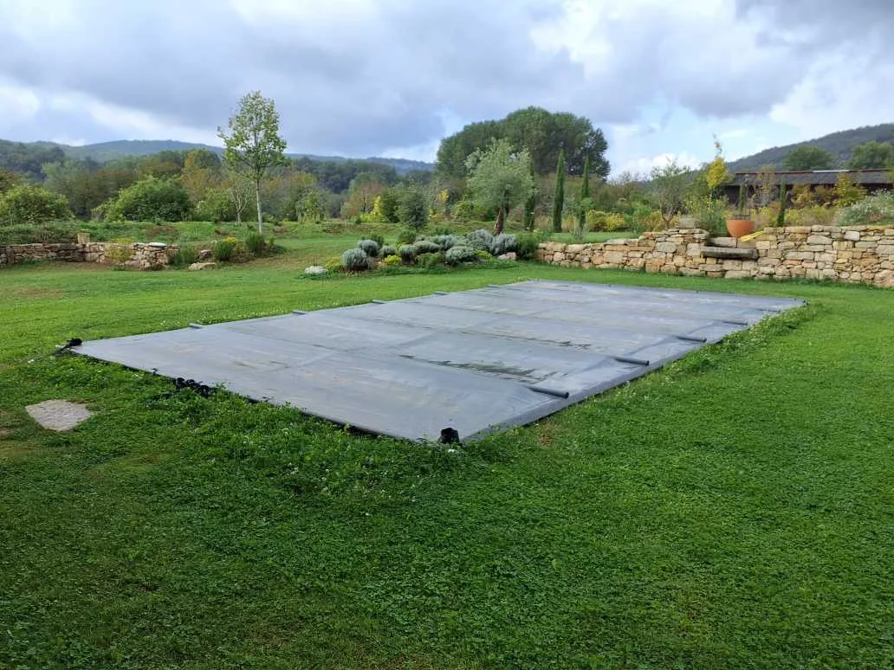

8 × 4 sur mesure
Une réalisation Delpech équipée d’une pompe à chaleur et d’un volet hors sol.
Le site Delpech décrit la piscine traditionnelle comme une piscine familiale intégrée au style de la maison. Sa force tient à sa grande liberté de personnalisation.
La piscine traditionnelle convient aux projets qui recherchent avant tout la facilité d’usage, une esthétique équilibrée et une intégration naturelle avec la maison.
Forme, escalier, profondeur, plage, couleur de liner, traitement de l’eau, chauffage et système de sécurité peuvent ensuite être adaptés au projet global.
Une piscine traditionnelle peut rester très sobre ou devenir plus architecturale selon les matériaux et les abords.
Une réalisation Delpech équipée d’une pompe à chaleur et d’un volet hors sol.

Une configuration qui fait du bassin une extension directe de la maison.

Une version plus réduite sans renoncer à la convivialité.
Un premier échange permet de poser les bonnes dimensions, les circulations et les équipements utiles.
Demander un devis